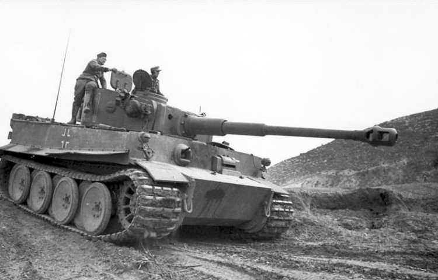
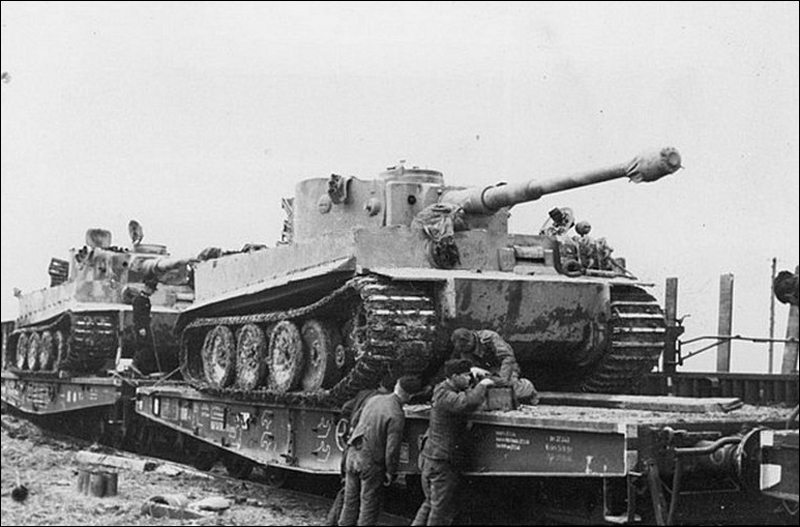
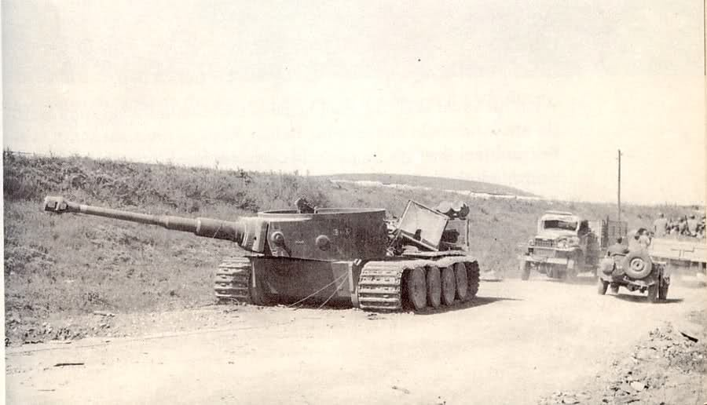
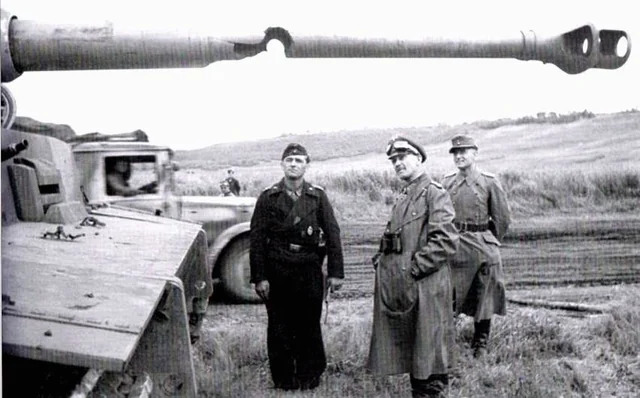
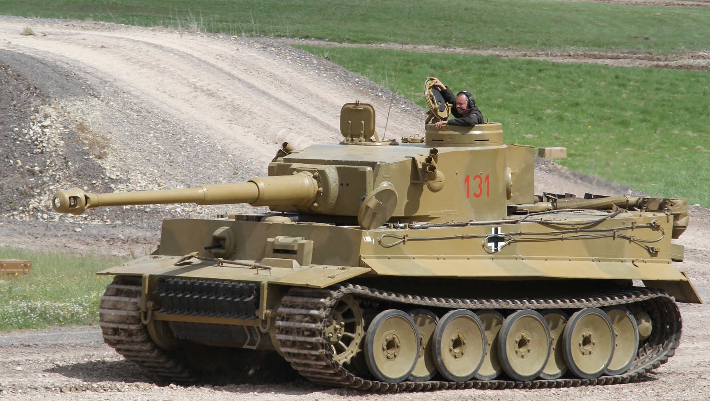

Tiger I
Giới thiệu
Tiger I (Panzerkampfwagen VI Ausf.E) là xe tăng hạng nặng nổi tiếng nhất của Đức trong Chiến tranh thế giới thứ hai. Xe được phát triển nhằm đối đầu với KV-1 và T-34 của Liên Xô sau Chiến dịch Barbarossa.
Khi xuất hiện vào cuối năm 1942, Tiger I gần như vượt trội mọi xe tăng Đồng Minh nhờ lớp giáp dày cùng pháo 88 mm KwK 36 L/56 cực kỳ chính xác.
Lịch sử phát triển
Sau các cuộc giao chiến tại Mặt trận phía Đông, quân đội Đức nhận thấy Panzer III và Panzer IV không còn đủ sức đối đầu với xe tăng Liên Xô.
Henschel được giao phát triển mẫu VK4501(H), sau này trở thành Tiger I. Xe chính thức tham chiến lần đầu gần Leningrad năm 1942 và nhanh chóng xây dựng danh tiếng đáng sợ trên chiến trường.
Thông số kỹ thuật
| Quốc gia | Đức |
|---|---|
| Tên đầy đủ | Panzerkampfwagen VI Tiger Ausf.E |
| Loại | Xe tăng hạng nặng |
| Khối lượng | 57 tấn |
| Kíp lái | 5 người |
| Động cơ | Maybach HL230 P45 V12 |
| Công suất | 700 mã lực |
| Tốc độ | 38 km/h |
| Tầm hoạt động | Khoảng 195 km |
| Giáp | 25–120 mm |
Vũ khí
Tiger I được trang bị pháo chính 88 mm KwK 36 L/56, phát triển từ pháo phòng không nổi tiếng FlaK 36. Đây là một trong những khẩu pháo tăng chính xác và mạnh nhất thời kỳ đầu Thế chiến II.
- Pháo chính: 88 mm KwK 36 L/56.
- Cơ số đạn: khoảng 92 viên.
- Súng máy MG34 đồng trục 7,92 mm.
- Súng máy MG34 phía trước thân xe.
- Một số xe có súng máy phòng không trên nóc tháp pháo.
Ưu điểm
- Pháo 88 mm có sức xuyên giáp cực mạnh.
- Độ chính xác rất cao ở khoảng cách xa.
- Giáp trước dày tới 100–120 mm.
- Không gian chiến đấu rộng, thuận lợi cho kíp lái.
- Tạo áp lực tâm lý lớn đối với lực lượng Đồng Minh.
Nhược điểm
- Khối lượng lớn khiến xe di chuyển chậm.
- Tiêu hao rất nhiều nhiên liệu.
- Hệ thống truyền động dễ hỏng khi hoạt động lâu.
- Khó vận chuyển bằng đường sắt và qua cầu.
- Chi phí sản xuất và bảo dưỡng cao.
Các trận đánh tiêu biểu
Leningrad (1942)
Tiger I lần đầu được đưa vào chiến đấu gần Leningrad. Do điều kiện địa hình lầy lội và nhiều sự cố cơ khí, hiệu quả ban đầu chưa cao.
Tunisia (1943)
Tại Bắc Phi, Tiger I thể hiện ưu thế vượt trội trước xe tăng Anh và Mỹ, đặc biệt trong các trận đánh ở khoảng cách xa.
Kursk (1943)
Tiger I tham gia Chiến dịch Citadel với số lượng lớn. Pháo 88 mm giúp xe tiêu diệt nhiều xe tăng Liên Xô, nhưng bãi mìn và pháo chống tăng đã làm giảm đáng kể hiệu quả chiến đấu.
Normandy (1944)
Tiger I tiếp tục chiến đấu tại Normandy. Dù vẫn rất nguy hiểm trong các cuộc đấu tăng trực diện, xe thường bị không quân Đồng Minh và các vấn đề hậu cần hạn chế khả năng hoạt động.
Đánh giá tổng quan
Tiger I được xem là một trong những xe tăng hạng nặng thành công nhất của Đức trong Thế chiến II. Sự kết hợp giữa pháo 88 mm và lớp giáp dày giúp Tiger I áp đảo phần lớn xe tăng Đồng Minh trong giai đoạn 1942–1944.
Tuy nhiên, chi phí sản xuất cao, độ tin cậy cơ khí chưa thật sự ổn định và nhu cầu hậu cần lớn khiến số lượng Tiger I được chế tạo chỉ khoảng 1.350 chiếc, không đủ để tạo ưu thế chiến lược lâu dài.
Thư viện ảnh



